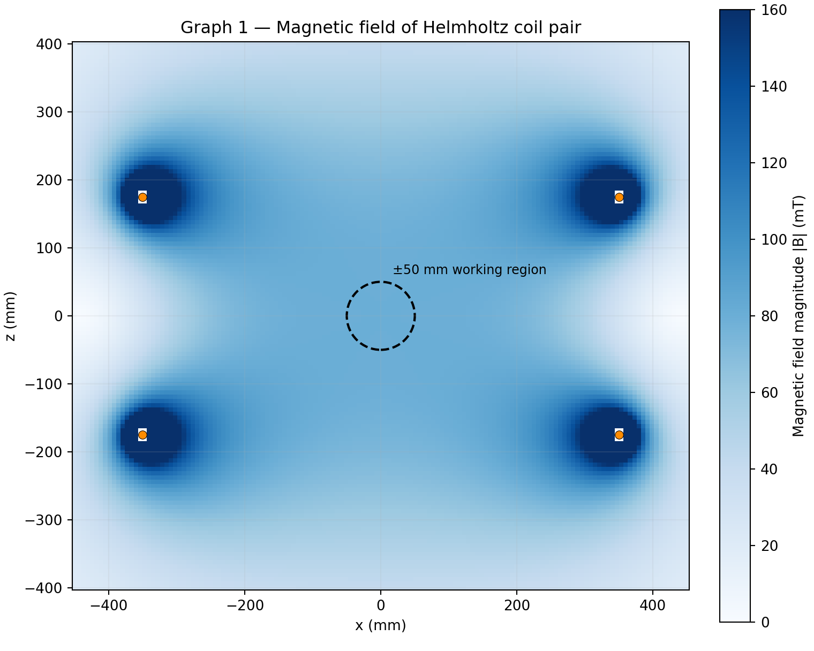
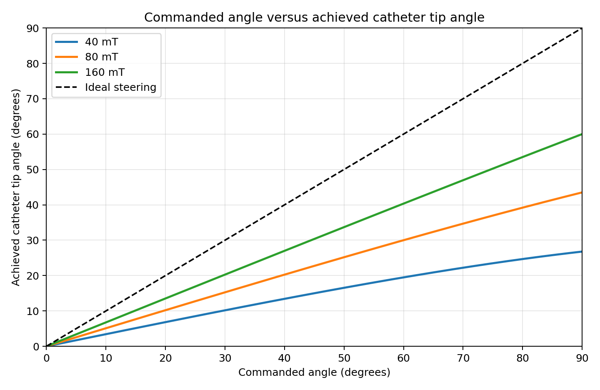
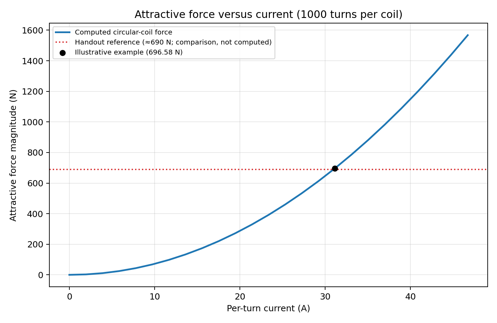

Navigation field
Biot–Savart magnetic field, center field, field map and uniformity.
A numerical study of magnetic navigation, catheter steering, coil engineering, and electrical conduction in cardiac tissue.
The goal is to simulate the chain from external coil current to magnetic field, catheter tip angle, contact with the heart wall, and an electrical lesion proxy.
We then recommend a field strength while accounting for electrical power, cooling, and mounting forces. This is a computational classroom model, not a clinical device or a validated treatment prediction.
VIEW THE PROJECT HANDOUT ↗What the assignment asks us to compute.
Biot–Savart magnetic field, center field, field map and uniformity.
Current-loop force, dipole torque and the catheter's equilibrium angle.
Wire resistance, power, heat, cooling and forces between coils.
Voltage, current density, impedance, power split and lesion proxy.
Connect the models and propose a field strength with uncertainty and cost.
A visual walkthrough from the engineering brief to the current simulation results. Use the arrows or keyboard to explore.
Our final YouTube video will go here after all five milestones are completed. It will explain the design, show the simulations, and summarize our findings.
The mathematics, numerical verification, figures, assumptions, and engineering interpretation behind the presentation. All original PDF documents are collected in the References section.
Two coaxial Helmholtz coils, each with a radius of 350 mm, are separated by 350 mm. A vectorized Biot–Savart calculation approximates the field by summing contributions from discrete wire segments. The result is compared to analytical circular-coil and Helmholtz center-field equations.

Figure 01 — Magnitude of the navigation field. Values come from a standalone illustrative 80 mT model, not a verified official coil baseline.
OPEN COMPLETE MILESTONE 1 REPORT ↗The tip magnet is modeled as an equivalent current loop. The loop-force integral approaches zero in a uniform field, while loop torque agrees with the dipole result. Steering stops when magnetic torque balances the restoring torque from the flexible catheter shaft.

Figure 02 — Stronger fields improve steering in the example. Shaft stiffness was calibrated to reproduce the handout's approximate 30° response, not independently verified.
OPEN COMPLETE MILESTONE 2 REPORT ↗The windings are not ideal power sources. Copper resistance leads to Joule heating, and the coils exert attractive forces on their supports. Wire dimensions affect resistance and current density, while mechanical loading scales approximately with the square of the drive for fixed geometry.

Figure 03 — Attraction increases with coil current. Example assumptions are 1,000 turns, 4 mm conductor radius and selected cooling parameters; these are not the official baseline.
OPEN COMPLETE MILESTONE 3 REPORT ↗Milestone 4 will solve the conduction problem in blood and myocardium, estimating impedance, power split, and a lesion proxy. Milestone 5 will connect navigation, steering, contact and dose, then select a field strength considering electrical and mechanical costs and model uncertainty.
Every PDF in one place: Dr. Joy’s original project handout and the detailed milestone working reports. Select any document to preview it or open it in a new tab.
Choose a reference above or from the menu. PDF files open directly from the GitHub Pages repository root.